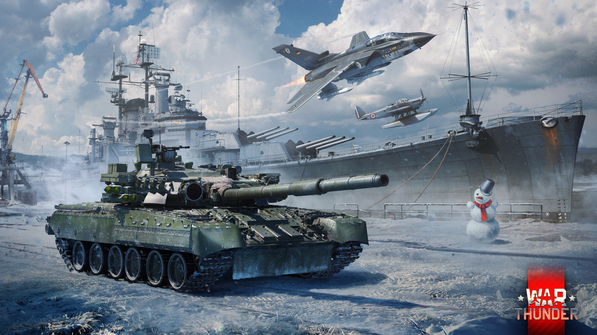

War Thunder – wieloosobowy symulator wojenny, umożliwiający toczenie bitew przy użyciu samolotów, śmigłowców, czołgów oraz okrętów. Gra stworzona i wydana została przez Gaijin Entertainment. Od 12 sierpnia 2012 do końca 2016 roku znajdowała się w fazie otwartej wersji beta
Typ:
Gra
Twórca:
Gaijin Entertainment
Wydawca:
Gaijin Entertainment
Kompatybilne systemy operacyjne:
Windows 7, Windows 8, Windows 10, Linux, MacOS
Ostatnia aktualizacja:
18 września 2022r.
Minimalne wymagania sprzętowe
- Procesor: Dual-Core 2.2 GHz
- Grafika: DirectX 10.1 level video card: AMD Radeon 77XX / NVIDIA GeForce GTX 660. The minimum supported resolution for the game is 720p.
- 17 GB dostępnej przestrzeni
- około 4GB RAM
Zalecane wymagania sprzetowe
- Procesor: Intel Core i5 or Ryzen 5 3600 or better
- Grafika: DirectX 11 level video card or higher and drivers: Nvidia GeForce 1060 and higher, Radeon RX 570 and higher
- 95 GB dostępnej przestrzeni
- Około 16GB pamięci RAM
Najlepsze dlc to:
- War Thunder - F-4S Phantom II Pack
- War Thunder - Type 16 (FPS) Pack
- War Thunder - USS Des Moines Pack
- War Thunder - US Starter Pack
- War Thunder - USSR Starter Pack



Miejsce w rankingu najcześciej granych gier na Steam:
Nr. 9
Do zakupu na Steamie: (Kliknięcie logo spowoduje przeniesieniem na stronę sklepu)